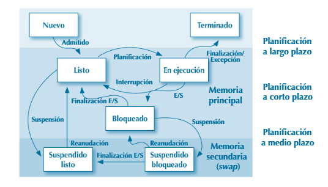

1.6. Estados de ejecución de un proceso
Desde que se crea inicialmente un proceso, puede pasar por diversos estados y cambiar de uno a otro. El sistema operativo gestiona los procesos y realiza los cambios de estado, teniendo en cuenta distintos eventos que pueden suceder durante el ciclo de vida del proceso, que se muestra en la figura 1.11.
Los cambios de estado de los procesos están controlados por el sistema operativo, con el objetivo de conseguir, por un lado, un máximo aprovechamiento de los recursos del sistema, y en particular del procesador o procesadores; y, por otro lado, una ejecución lo más eficiente posible de todos los procesos. Esto se consigue con una planificación a varios niveles:
Un proceso debe estar en la memoria principal para poderse ejecutar.
El planificador a largo plazo decide qué procesos son admitidos para su ejecución. Estos se cargan en la memoria principal y pasan a estado listo (ready). En sistemas operativos interactivos, como los que manejan la mayoría de los usuarios en sistemas de ordenadores, no hay realmente planificación a largo plazo, sino que son los propios usuarios quienes lanzan las aplicaciones, y estas se cargan inmediatamente en la memoria, y pasan a estado listo. Es importante, en cambio, en sistemas donde hay muchos procesos no interactivos y es el propio sistema operativo el que gestiona su lanzamiento.
Se realiza para procesos cargados en la memoria principal.
Su objetivo es repartir el tiempo de procesador entre todos los procesos, de manera que se consiga un máximo aprovechamiento del procesador, y que los procesos se ejecuten de la manera más eficiente posible. Un proceso en estado listo puede pasar a estado en ejecución y empezar a ejecutarse en el procesador. Un proceso en este estado puede volver a estado listo para permitir que otro proceso se ejecute. Cuando un proceso en ejecución realiza una operación de E/S, pasa a estado bloqueado, y se pasa a ejecutar un nuevo proceso que estaba en estado de lista o de listo a en ejecución. Cuando la operación de E/S haya concluido, el proceso volverá a estado listo. El planificador a corto plazo funciona basándose en interrupciones periódicas que hacen que el procesador pase inmediatamente a ejecutar una rutina de gestión de interrupción, que es parte del núcleo o kernel del sistema operativo. Esta rutina realiza la planificación a corto plazo, y decide si hay que continuar con la ejecución del proceso actual, o si hay que pasar a ejecutar un nuevo proceso y, en su caso, cuál.
Gestiona el paso de procesos de la memoria principal a la secundaria (suspensión) y viceversa (reaudación).
Los sistemas operativos actuales funcionan, en general, con memoria virtual. Esta es una técnica que utiliza un espacio de direcciones virtual, mayor que el disponible en la memoria física, y utiliza para ello un medio de almacenamiento secundario. El contenido de cualquier dirección de la memoria virtual puede estar en la memoria física (memoria principal) o en almacenamiento secundario (memoria secundaria). Pero el microprocesador solo puede acceder directamente a la memoria principal. Cuando un proceso necesita más memoria de la que hay disponible en ella, se consigue pasando parte de sus contenidos a la memoria secundaria. Cuando se necesitan contenidos que están en la memoria secundaria, deben pasarse antes a la memoria principal. Si no hay suficiente espacio en ella, antes hay que pasar algunos de sus contenidos a la memoria secundaria. Se produce así un intercambio o swap entre las memorias principal y secundaria. La memoria virtual funciona bien si los intercambios solo se producen ocasionalmente, porque las operaciones de lectura y escritura en almacenamiento secundario son muy lentas. Si son demasiado frecuentes, se produce un trasiego constante entre las memorias principal y secundaria (trashing), y el rendimiento del sistema se degrada enormemente.
Los procesos en la memoria principal que no se están ejecutando pueden suspenderse, y pasar a la memoria secundaria en los estados suspendido listo y suspendido bloqueado. Desde el estado suspendido bloqueado puede pasar al estado suspendido listo si se completa la operación de E/S que provocó su paso a estado bloqueado. También pueden reanudarse los procesos en estos estados para pasar a la memoria principal.
Para la gestión de los procesos, el sistema operativo utiliza un bloque de control de procesos (PCB) para cada proceso. El sistema operativo mantiene colas de procesos para cada uno de los estados. También mantiene colas para cada dispositivo de E/S, con información de los procesos que tienen operaciones pendientes en dicho dispositivo. La utilización de estas colas permite realizar, de manera muy eficiente, la planificación de procesos.